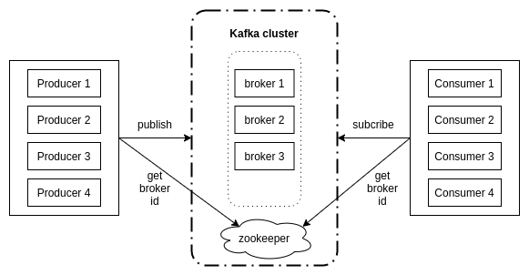

Kafka Concepts
Kafka là gì?
Kafka là event-streaming platform (distributed message platform), bên publish dữ liệu được gọi là proceducer còn bên subcribe dữ liệu được gọi là consumer, trong toàn bộ hệ thống, consumer sẽ nhận dữ liệu theo topic. Kafka có khả năng truyền một lượng message khổng lồ theo thời gian thực (millions/sec). Để đảm bảo toàn vẹn dữ liệu trong trường hợp consumer không subcribe được dữ liệu, Kafka sẽ lưu lại các message trên Queue và cả trên ổ đĩa đồng thời cũng replicate các message để tránh mất dữ liệu.
Một số đặc trưng của kafka
Distributed
Một distributed system được hiểu đơn giản là chia thành các machine làm việc cùng nhau và trên cùng một cluster dưới dạng một nút cho người dùng cuối. Distributed trong Kafka được hiểu theo nghĩa là lưu trữ, nhận và gửi messages trên các node khác nhau đượi gọi là Broker ( sẽ nói sâu hơn về Broker bên dưới).
Tất nhiên, một Distributed system sẽ đáp ứng được khả năng mở rổng và khả năng chịu lỗi cao.
Horizontal scalable
Như đã nói ở trên, khả năng mở rộng đơn giản chỉ là “ném“ vào nhiều machine hơn, hay trong Kafka là tạo nhiều Broker hơn, trên thực tế việc việc thêm một broker thì không không yêu cầu thời gian chết (downtime)
Fault tolerant
Do Kafka là một Distributed system, nên khả năng chịu lỗi là rất lớn. Ví dụ, một cụm Kafka được thiết kết bởi 5 node, nếu trong trường hợp leader node down thì một trong 4 nốt còn lại sẽ lên thay thế là leader để tiếp tục công việc.
Một điều đáng lưu ý là khảng năng chịu lỗi sẽ được đánh đổi trực tiếp bằng hiệu năng. Một hệ thống có khả năng chịu lỗi thì hiệu suất càng kém.
Commit log
Là một khái niệm cốt lõi của Kafka, Commit log được hình dung là một data structure chỉ cho phép thêm mới record và không thể xóa và sửa đổi record một khi đã được thêm vào commit log. Commit log dựa trên queue data structure tức được sắp xếp từ trái sang phải từ trái sang phải để đảm bảo thứ tự của events.
Kafka lưu trữ data trên local disk, và sắp xếp chúng trong Commit log giúp tận dụng khả năng tìm kiếm tuần tự. Một số lợi ích của cấu trúc Commit log như sau: - Đọc và ghi trên một không gian không đổi là O(1) do datas được ưu trữ dưới dạng key value. - Đọc và ghi không ảnh hưởng đến nhau
Lợi ích trên có ưu điểm rất lớn với lượng message scale theo thời gian, ví dụ việc tìm kiếm trên tập 1MB cũng giống như tìm kiếm trên tập 1GB. 
Một số thành phần của Kafka
Broker
- Là thành phần cốt lõi của Kafka
- Duy trì topic log và leader broker và follower broker cho các partitions được quản lý bởi ZooKeeper
- Kafka cluster bao gồm một hoặc nhiều broker
- Duy trì việc replicate trên toàn bộ cluster
Producer
- Publish message tới một hoặc nhiều topic
- Messages được append vào một trong các chủ đề
- Được coi là một user trong 1 Kafka cluster
- Kafka duy trì thứ tự của Message trên mỗi partition chứ không phải trên toàn partition
Message
- Kafka message chứa một mảng các bytes, ngoài ra nó có một metadata tùy chọn được gọi là Key.
- Một Message có một Key và được ghi vào một partition cụ thể.
- Message cũng được viết đưới dạng các lô, và các lô được nén lại khi truyền qua networking
- Chú ý việc ghi dưới dạng các lô sẽ tăng thông lượng nhưng cũng tăng độ trễ, do đó cần cân đối điều này.
Consumer
- Subcriber message từ một topic
- Một hoặc nhiều Consumer có thể subcrible một topic từ các partition khác nhau, được gọi là consumer group.
- 2 consumer trong cùng một Group không thể cùng subcribe các messages trong cùng một partition.
Topic
- Có thể được xem như một folder của file system
- Mỗi message được publish tới topic tại một location cụ thể được gọi là offset. Điều đó có nghĩa là message được xác định là offset number
- Mỗi topic, Kafka cluster sẽ duy trì một file log
- Dữ liệu trên mỗi phân vùng đều được replicate tời những broker khác để đảm bảo khả năng chịu lỗi
© 2021 PuerTigris